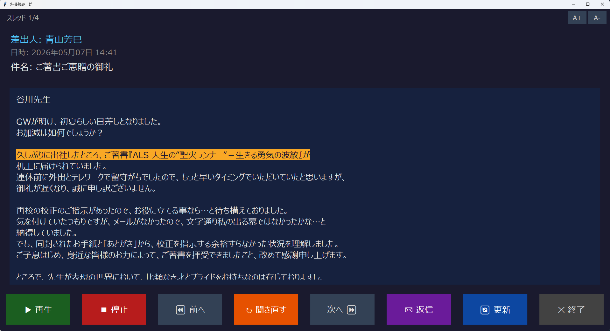
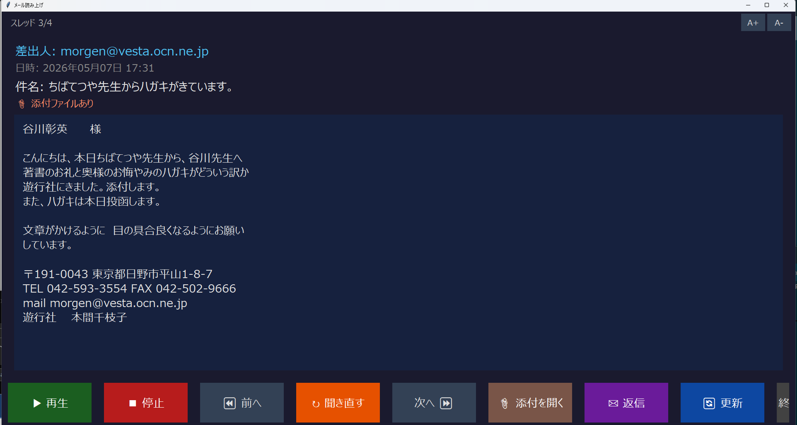
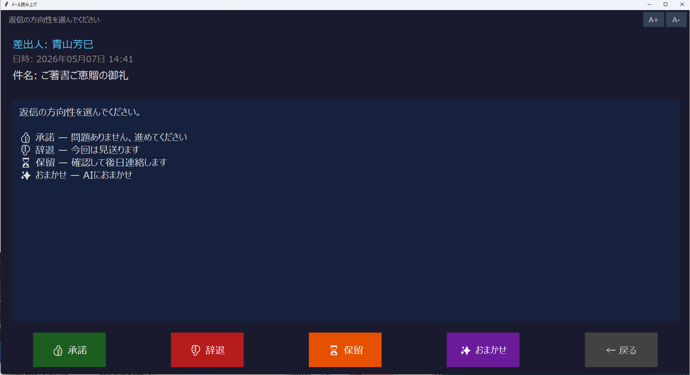
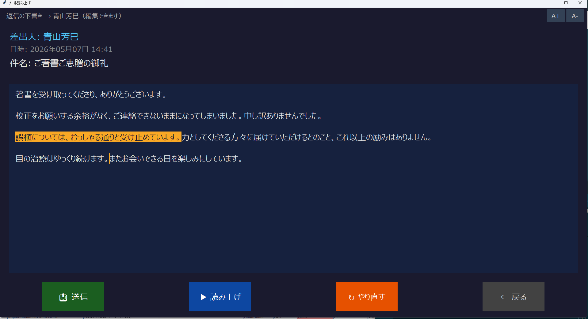

このアプリは、BIGLOBEメールの未読メールを音声で読み上げ、ボタン操作だけで返信まで行えるアプリケーションです。
主な機能:
デスクトップの「メール読み上げ」をダブルクリックしてください。
起動すると自動的にメールを取得し、読み上げが始まります。

画面の構成:
| ボタン | 機能 |
|---|---|
| ▶ 再生 | 現在のメールを読み上げます |
| ■ 停止 | 読み上げを止めます |
| ⏪ 前へ | 前のメールに戻ります |
| ↻ 聞き直す | 今のメールをもう一度読み上げます |
| 次へ ⏩ | 次のメールに進みます |
| 📎 添付を開く | 添付ファイルを開きます（添付ありの場合のみ表示） |
| ✉ 返信 | 返信を作成します |
| 🔄 更新 | 新しいメールがないか確認します |
| ✕ 終了 | アプリを終了します |
画面右上の A+（大きく）/ A-（小さく）ボタンで調整できます。

添付ファイルがあるメールには「添付ファイルあり」と表示され、📎 添付を開く ボタンが現れます。
ボタンを押すと、添付ファイルがパソコンの対応アプリで開きます。
メール画面で ✉ 返信 を押すと、返信作成が始まります。

AIに返信の方向性を指示します。
| ボタン | 内容 |
|---|---|
| 👍 承諾 | 「問題ありません」「進めてください」のような返信 |
| 👎 辞退 | 「今回は見送らせていただきます」のような返信 |
| ⏳ 保留 | 「確認して後日ご連絡します」のような返信 |
| ✨ おまかせ | AIがメール内容から適切な返信を判断 |

AIが返信文を作成し、画面に表示されます。内容は読み上げられます。
画面上で直接文章を修正することもできます。
| ボタン | 機能 |
|---|---|
| 📤 送信 | 返信メールを送信します |
| ▶ 読み上げ | 下書きの内容を読み上げます |
| ↻ やり直す | AIにもう一度下書きを作り直させます |
| ← 戻る | 送信せずにメール画面に戻ります |
| 症状 | 対処 |
|---|---|
| 音声が聞こえない | パソコンの音量を確認してください |
| 「未読メールはありません」と表示される | 新しいメールがないか、Webメールで確認してください |
| アプリが動かない | 一度終了して、もう一度起動してください |
| 上記で解決しない場合 | 開発元にご連絡ください（下記参照） |
開発責任者：谷川郁男
Mail：tanikawa@tranzact.co.jp
Mobile：090-4194-4069